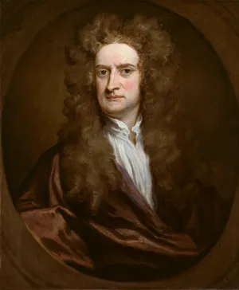

Sir Isaac Newton was an English physicist, mathematician, and astronomer who stands as one of the most influential scientists in history. His work in mechanics, optics, and mathematics laid the foundation for modern physical science and defined the course of the Scientific Revolution.
Newton was born on December 25, 1642 (January 4, 1643 by the modern Gregorian calendar) in the hamlet of
Woolsthorpe, Lincolnshire, England. He was the only son of a prosperous wealthy local yeoman, also named
Isaac Newton, had died three months before his birth. Born premature and tiny—reportedly small
enough to fit inside a quart mug—Newton was not expected to survive his first day.
When Newton was three years old, his mother Hannah Ayscough remarried a wealthy minister named Barnabas Smith and moved away, leaving young Isaac to be raised by his maternal grandmother. This separation, which lasted for nine years until Smith's death in 1653, had a lasting psychological impact on Newton and has been linked to his later insecurity and intense defensiveness.
At age 12, Newton was enrolled at the King's School in Grantham, where he lodged with a local apothecary—an experience that introduced him to chemistry. His mother later pulled him out of school, intending for him to manage the family farm, but Newton proved a dismal failure at farming, finding it monotonous and uninteresting. Recognizing his intellectual potential, his uncle (a Cambridge graduate) and the headmaster of the Grantham school persuaded his mother to allow him to prepare for university.
Newton entered Trinity College, Cambridge, in 1661. The university curriculum at the time was still steeped in Aristotelian philosophy, but Newton independently immersed himself in the more advanced works of modern philosophers like René Descartes, as well as the physics of Robert Boyle and Robert Hooke. He graduated with a bachelor's degree in 1665.
Newton's most productive period came during 1665–1666, when Cambridge closed due to the Great Plague and he returned to Woolsthorpe. He later called these years "the prime of my age for invention". During this time, he began developing the fundamentals of calculus, explored the nature of light and color, and started formulating his ideas on gravity and motion.
He was elected a Fellow of the Royal Society in 1671 and became its President in 1703, a position he held until his death. He was knighted by Queen Anne in 1705, becoming the first scientist to receive that honor.
Newton never married and lived modestly. He died on March 20, 1727 (March 31 by the modern calendar) in London and was buried with great pomp in Westminster Abbey.
For nearly 300 years, Newton has been regarded as the founding exemplar of modern physical science, with achievements in experimental investigation as innovative as those in mathematical research. His three laws of motion and law of universal gravitation remained the cornerstone of physics until the advent of relativity and quantum mechanics in the 20th century.